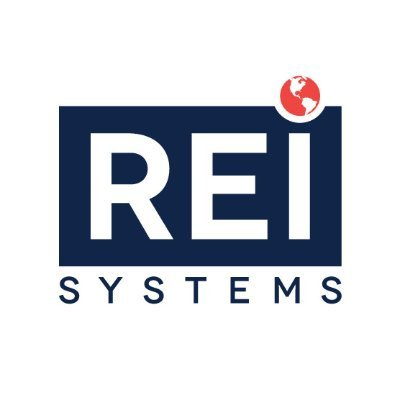

U.S.Citizen ● (571) 276-6884 ● Centreville, VA ● sarraff3000@gmail.com ● LinkedIn Profile
Analytical and forward-thinking Business Information Technology student with a penchant for employing data analytics and machine learning to transform business processes. Proficient in programming languages such as Java, SQL, Python, and C++, coupled with robust organizational and project management skills. Aiming to leverage technical and analytical expertise as an intern to contribute to innovative technological solutions and effective project delivery.
| Icon | Entity Name | Title/Degree |
|---|---|---|
| Virginia Tech (VT) | Bachelors of Science in Business Information Technology (BIT) | |
|  | REI Systems | Software Development/Engineering Intern My Role: Visited and implemented various design approaches during the creation of an AI-driven virtual assistant using Java, C++, and Cuda C, ensuring optimal user security and authentication. Partnered with the deployment team to implement AWS solutions, ensuring 99.5% uptime and efficient resource utilization. Aided the backend team in creating secure solutions for extensive user bases, aligning with system analyst and project management objectives. |
| Maximus | Business Development intern (Global Market Strategy) My Role: Used Tableau for deep competition analysis in the IT consulting sector, leading to the reorganization of 50+ competitor profiles and pinpointing 3 key market positioning opportunities. Developed and maintained business intelligence dashboards in TABLEAU, providing real-time data visualizations that informed stakeholders of key performance metrics. Utilized advanced Excel and SQL skills to organize and analyze competitor data efficiently. |
|
| The Brite Group | Data Analyst Intern My Role: Guided and developed programming software in Microsoft SQL and Python, mining data from DOJ, FBI, and NCVS which spotlighted 200+ falsely reported crimes and fraudulent entries. Applied Machine Learning/NLP techniques on 1M+ tweets gauging public belief with focus on data mining and processing. Used vlookup, hlookup, VBA and SQL to sift through thousands of lines of data for filtration and validation purposes. |
| Project Name: | Description: | Responsibilities/Achievements: |
|---|---|---|
| Autonomous Excavator and Hauler Project | Collaboration in the development of an autonomous excavator and hauler system |
|
Java | Python | AWS | SQL | Google Cloud | Data Analytics | Linux/Unix | OSI Network Communications | Excel | VBA | XAML | WPF | Excel Analytic Solver